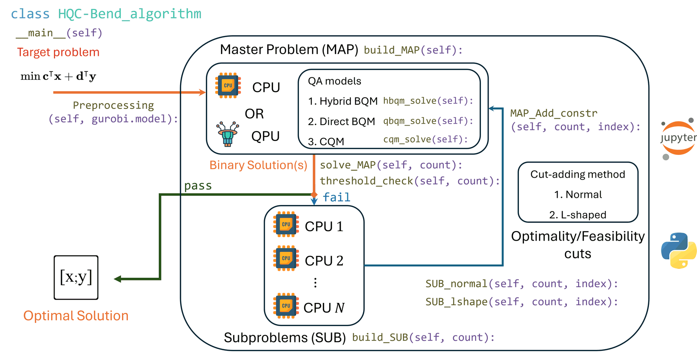
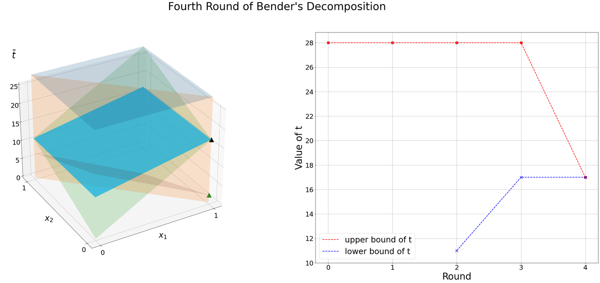
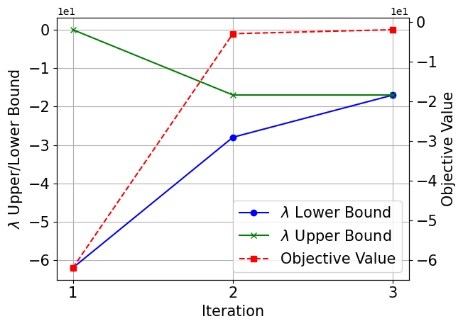
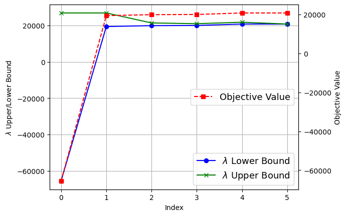

预处理
读取你的 gurobipy 模型，区分二进制变量 \mathbf{x} 和连续变量 \mathbf{y}，并提取各矩阵。
\mathbf{c},\mathbf{H},\mathbf{e} 进入 MAP，\mathbf{d},\mathbf{A},\mathbf{G},\mathbf{b} 进入 SUB。
IEEE QCNC 2025 · 开源 Python 包
v202610新增：Benders 对偶分解割面向（混合）整数线性规划的混合量子-经典多割 Benders 分解算法。
输入一个 Gurobi 模型，HQC-Bend 会把二进制主问题交给量子或量子启发式退火器，把连续子问题交给经典 CPU，并不断添加最优性割和可行性割，直到上下界收敛。
import gurobipy as gp
from HQCMCBD import HQCMCBD_algorithm
model = gp.Model("MILP")
# ... 变量、约束、目标函数 ...
solver = HQCMCBD_algorithm(model, mode="default")
solver.run()建好模型后只需两行代码，即可全自动完成混合量子-经典求解。
01 · 研究动机
很多规划和运营问题同时包含是/否决策（是否开通一条线路、启动一台发电机、打开一台冷水机组）和连续量（流量、功率、温度）。这类问题就是（混合）整数线性规划，即 (M)ILP。
(M)ILP 是 NP-hard 问题：除非 P = NP，否则不存在能在多项式时间内求解所有实例的算法。
经典方法包括枚举法、分支定界法和割平面法，它们都运行在 CPU 上。
02 · 量子与经典
两种处理器各有所长、各有所短。HQC-Bend 把问题中适合各自的部分分别交给它们。
| 优势 | 劣势 | |
|---|---|---|
| CPU 中央处理器 |
|
|
| QPU 量子处理器 |
|
|
叠加态同时覆盖巨大的候选解空间。
把优化问题嵌入量子系统的能量景观中。
系统演化到低能量状态，读出后即为经典解。
主问题是纯二进制问题，正是退火器原生求解的形式（QUBO）。
子问题是连续线性规划，经典求解器可以快速并行地处理。
03 · 工作原理
HQC-Bend 把目标模型分解为二进制主问题（MAP）和连续子问题（SUB），并在两者之间迭代。

读取你的 gurobipy 模型，区分二进制变量 \mathbf{x} 和连续变量 \mathbf{y}，并提取各矩阵。
\mathbf{c},\mathbf{H},\mathbf{e} 进入 MAP，\mathbf{d},\mathbf{A},\mathbf{G},\mathbf{b} 进入 SUB。
在 CPU（Gurobi）、QPU（D-Wave CQM/BQM）或本地量子启发式采样器上求解，返回一个或多个二进制候选解 \mathbf{x}^{*}。
根据 λ 上下界的阈值检查决定是否停止。
对每个候选解，子问题在 CPU 1…N 上以 normal、L-shaped 或 bdd 方案求解，并向 MAP 返回最优性割或可行性割。
循环持续进行，直到间隙收敛或达到 max_steps。
gurobipy 模型，可作为脚本运行，也可在 Jupyter Notebook 中运行。04 · 主问题求解器
由于 λ 被离散为若干二进制位（见配置），主问题是纯二进制的。各量子模式把目标函数和约束编码为 QUBO，每个约束作为惩罚项加入：
其中 P_c 是约束 c 的惩罚系数，g(\cdot) 是该约束编码后的惩罚项。
Hybrid_mode: false经典基准。用 Gurobi 精确求解 MAP，每次迭代添加一个割。
"cqm"D-Wave Leap 混合 CQM 求解器。约束以原生形式传入，而不是转成惩罚项。
"bqm_hybrid"D-Wave Leap 混合采样器，经典模块与量子模块协同工作，性能均衡。
"bqm_quantum"通过嵌入组合器（embedding composite）在 D-Wave QPU 上进行纯量子退火。
"openjij"在本机运行的量子启发式退火，无需云端令牌。
"bifurcation"基于 PyTorch 的量子启发式 Ising 求解器，HQC-Bend 在 NVIDIA GPU 上运行它。GPU 安装指南
混合模式运行在 D-Wave 的混合求解服务（Hybrid Solver Service）上。它把经典启发式模块（CH）与量子模块（QM）组合成多个并行线程，共同返回一个或多个高质量候选解。HQC-Bend 可以把每个候选解各自转化为一个割（多割）。
示意图参考 Osaba, Villar-Rodríguez, Gomez-Tejedor and Oregi, “Hybrid quantum solvers in production: how to succeed in the NISQ era?”, IDEAL 2024, pp. 423–434。
05 · 加割方案
对于 MAP 给出的二进制候选解 \mathbf{x}^{*}，子问题会产生对偶解 \mathbf{w}^{*}，并据此生成以下两种割之一：
Benders 对偶分解（Rahmaniani 等，Operations Research，2020）为子问题引入主问题变量的二进制副本 \mathbf{z}，并用乘子 \boldsymbol{\pi} 把副本约束 \mathbf{z} = \mathbf{x} 松弛到目标函数中。
F(\boldsymbol{\beta}) 是在每一行加入带惩罚的松弛变量 \mathbf{s}、目标为 \mathbf{1}^{\intercal}\mathbf{s} - \boldsymbol{\beta}^{\intercal}\mathbf{z} 的同一问题。把 \boldsymbol{\pi} 固定为 LP 乘子时，割的斜率与经典割相同、右端项更高（加强割）；进一步优化 \boldsymbol{\pi} 则得到拉格朗日割。
在二进制主问题解处，这些割与经典割相同，因此 BDD 在第一次求解主问题之前、于 LP 根节点运行，之后的主循环添加 L-shaped 割。子问题 MILP 还会给出可行解，其中最好的一个作为当前最优解保存在 data_output/bdd_info.json 中。
量子采样器返回的不只是一个解，而是一整个低能量二进制状态的分布。设置 Mcut_flag: true 后，HQC-Bend 取最好的 Cutnums 个候选解，在 CPU 上并行求解它们的子问题，并在一次迭代中为每个候选解各添加一个割。每轮添加的割越多，λ 的上下界收紧得越快。
每个割都是一个从下方约束 λ 的平面。迭代持续进行，直到 λ 的上下界之差小于 threshold.gap。

06 · 配置
一个 JSON 文件控制求解后端、加割方案、λ 的精度和停止准则。mode="manual" 读取 config.json，mode="default" 读取 config_default.json。即使对这一领域了解不多，用户也能自由切换数学方法。
将其保存为 config.json，放在 HQCMCBD.py 所在目录，并以 mode="manual" 运行。
| 配置项 | 含义 | 取值 |
|---|---|---|
lambda_var | 连接 MAP 与 SUB 的变量 λ，表示为 \lambda = \lambda_{+}^{\mathbb{Z}} + \lambda_{+}^{\mathbb{Q}\setminus\mathbb{Z}} - \lambda_{-}^{\mathbb{Z}} | 对象 |
nonneg_bits_length | 非负整数部分的位数 \lambda_{+}^{\mathbb{Z}} | 正整数 |
decimal_bits_length | 正小数部分的位数 \lambda_{+}^{\mathbb{Q}\setminus\mathbb{Z}} | 正整数 |
negative_bits_length | 负整数部分的位数 \lambda_{-}^{\mathbb{Z}} | 正整数 |
submethod | 子问题的求解方法 | normal, l_shape, bdd |
bdd.root_iterations | BDD 根节点阶段的最大 LP 迭代次数；为 0 时等同于 l_shape | 非负整数 |
bdd.lagrangian_iterations | 每个拉格朗日割的最大乘子更新次数；为 0 时只生成加强割 | 非负整数 |
bdd.mip_gap | BDD 子问题的 Gurobi MIPGap | 非负数 |
bdd.time_limit | 每个 BDD 子问题的 Gurobi 时间限制（秒） | 正数或 null |
debug_mode | 导出主问题和子问题的 LP 文件 | true, false |
Hybrid_mode | 用量子或量子启发式后端求解主问题（Q+C），而不是用 Gurobi（C+C） | true, false |
dwave.mode | MAP 交给量子求解器时的编码方式 | cqm, bqm_hybrid, bqm_quantum, openjij, bifurcation |
dwave.DWave_token | D-Wave Leap API 令牌。若为占位值，则改为读取环境变量 DWAVE_API_TOKEN | 字符串 |
dwave.Mcut_flag | 每次迭代添加多个割（否则只加一个） | true, false |
dwave.Cutnums | Mcut_flag 为 true 时每次迭代添加的割数 | 正整数 |
dwave.num_of_read | 从量子求解器读取的样本数 | 正整数 |
threshold.type | 停止准则检查的间隙：绝对间隙 |\bar\lambda - \underline\lambda| 或相对间隙 100\cdot|\bar\lambda - \underline\lambda| / |\bar\lambda|（百分比） | absolute, relative |
threshold.gap | 所选间隙低于该值 ε 时停止运行 | 正数 |
max_steps | 迭代达到该次数后算法停止 | 正整数 |
07 · 快速上手
需要 Python 3.8+ 以及带有效许可证的 Gurobi 9.1.2+。HQCMCBD.py 在加载时会导入所有后端，因此即使只用一种模式，也需要全部安装。
git clone https://github.com/djzts/HQCMCBD-API.git
cd HQCMCBD-API
pip install gurobipy numpy dimod dwave-system openjij torch simulated-bifurcation使用 D-Wave 模式（cqm、bqm_hybrid、bqm_quantum）时，请在环境变量中设置 DWAVE_API_TOKEN，不要把令牌提交到配置文件中。
"bifurcation"）bifurcation 后端调用 simulated_bifurcation.minimize(..., device="cuda")，因此需要一块驱动支持 CUDA 11.8 的 NVIDIA 显卡。GPU_acced_Q 安装指南一步步介绍了环境搭建：Python 3.10（推荐用 conda 新建环境）、CUDA 11.8 版 PyTorch 2.6.0 以及 simulated-bifurcation 1.2.0。简要步骤如下，请在上面的安装命令之后运行，以免 GPU 版 PyTorch 被替换：
pip install torch==2.6.0 torchvision==0.21.0 torchaudio==2.6.0 --index-url https://download.pytorch.org/whl/cu118
pip install simulated-bifurcation==1.2.0
python -c "import torch, simulated_bifurcation as sb; print(torch.__version__, torch.cuda.is_available())"最后一条命令应输出 2.6.0+cu118 True。PyTorch 的 cu118 安装包已自带 CUDA 运行库，无需另装 CUDA Toolkit。如果输出 False，请参考指南中的常见问题。
from HQCMCBD import HQCMCBD_algorithmimport warnings
warnings.filterwarnings("ignore")
%run HQCMCBD_notebook.ipynb任何包含二进制变量和非负连续变量的 gurobipy 模型都可以。下面是包中的示例问题（Example.ipynb）。
import gurobipy as gp
from gurobipy import GRB
import numpy as np
A = np.array([[0, 0], [0, 0], [0, 0], [0, 0],
[-1, -1], [-1, 0], [-1, 0], [0, -1], [0, -1]])
G = np.array([[1, 0, 1, 0], [1, 0, 0, 1], [0, 1, 1, 0], [0, 1, 0, 1],
[0, 0, 0, 0], [1, 0, 0, 0], [0, 1, 0, 0], [0, 0, 1, 0], [0, 0, 0, 1]])
b = np.array([1, 1, 1, 1, -1, 0, 0, 0, 0])
c = np.hstack(np.array([-15.0, -10.0]))
h = np.hstack(np.array([8, 9, 5, 6]))
# 创建 Gurobi 模型
model = gp.Model("MILP")
# 添加变量
x = model.addMVar(shape=len(c), vtype=GRB.BINARY, name="x")
y = model.addMVar(shape=len(h), vtype=GRB.CONTINUOUS, lb=0, name="y")
z = model.addVar(vtype=GRB.CONTINUOUS, lb=0, name="z")
p = model.addVar(vtype=GRB.BINARY, name="p")
# 目标函数与约束
model.setObjective(c @ x + h @ y, GRB.MAXIMIZE)
model.addConstr(A @ x + G @ y <= b, name="constraints")
model.addConstr(z == 1, name="constraints_eq")
model.addConstr(p == 1, name="constraints_eq2")
model.optimize()最大化模型会在内部转换为最小化问题，结果仍按原始符号约定输出。
solver = HQCMCBD_algorithm(model, mode="manual")
solver.run()solver = HQCMCBD_algorithm(model, mode="default")
solver.run()每一轮都会输出目标值、λ 的上下界以及相对和绝对间隙。间隙达到阈值时停止运行。
Benders decomposition Round - 2
The 2-th Config file of quantum sampling is created successfully at .\data_output\Gurobi_info-round-2.json.
create optimality cut
Round 2:
Current Objective value is 12.0;
lambda_upper is 20.0;
lambda_lower is 11.0;
Relative gap is 81.818%.
Absolute gap is 9.0
Benders decomposition Round - 3
create optimality cut
Round 3:
Current Objective value is 6.0;
lambda_upper is 19.0;
lambda_lower is 17.0;
Relative gap is 11.765%.
Absolute gap is 2.0
Benders decomposition Round - 4
create optimality cut
Round 4:
Current Objective value is 5.0;
lambda_upper is 17.0;
lambda_lower is 17.0;
Relative gap is 0.0%.
Absolute gap is 0.0
optimal found, it takes 4 Rounds.data_output/每一轮的目标值、λ 上下界、求解器元数据和 MAP 解。LP_output/开启 debug_mode 时导出的 MAP 和子问题的 Gurobi LP 文件。LP_output_dwave/量子和量子启发式求解器的输出文件。08 · 结果
两张图都跟踪了每次迭代中连接变量 λ 的上下界和目标值。


HQC-Bend 是一个基于 HQC-Bend 算法、用于求解复杂 (M)ILP 问题的 Python 包。它把适合量子计算的优化任务交给量子计算，其余部分交给经典求解器，为 (M)ILP 问题提供高效、稳健的求解方案。
09 · 应用
配套仓库 djzts/HQCMBD 中有一个为 HQC-Bend 构建的数据中心模型。它与 HQC-Bend 天然契合：启停决策是二进制变量，交给量子主问题；功率和温度是连续变量，交给 CPU 子问题。
最小化从电网购电的成本：
电网购电量等于 HVAC 负载加服务器负载加电池充电量，再减去光伏发电量。调度方案必须满足电池约束、考虑相邻区域换热的区域热动态、通风要求，以及冷水机组和冷却塔的容量约束。
10 · 相关研究
同样的思路（二进制主问题在量子硬件上求解，连续子问题由经典求解器处理）已应用于卫星与空间网络、联邦学习和能源系统等方向的同行评审论文。
IEEE Transactions on Power Systems, vol. 40, no. 5, pp. 3967–3978, 2025
协同调度氢能系统与配电系统，包括车载移动储氢设施的行驶路线和装卸量。主问题以 QUBO 形式在量子退火器上求解，子问题在经典 CPU 上求解。
IEEE Transactions on Mobile Computing, 2024
在低轨卫星、高空平台和地面基站共同服务物联网设备的场景下，最小化服务时延。基于 Lyapunov 的在线控制算法把随机优化问题分解为逐时隙问题，再借助量子计算求解。
IEEE Transactions on Mobile Computing, vol. 24, no. 2, pp. 830–844, 2025（2024 年在线发表）
联合优化用户关联、虚拟网络功能部署和流量路由。得到的 MILP 用混合量子-经典 Benders 分解求解，其中主问题被转换为 QUBO。
IEEE Transactions on Network Science and Engineering, vol. 11, no. 6, pp. 6038–6051, 2024
同时调度多个联邦学习模型，选择参与方并确定学习率。该联合问题是 NP-hard 的 MINLP，用混合量子-经典 Benders 分解求解。
IEEE Transactions on Network Science and Engineering, vol. 11, no. 6, pp. 5163–5174, 2024
联合优化内容分发、缓存放置和发射功率，以最大化网络吞吐量。大规模 MINLP 用混合量子-经典广义 Benders 分解求解。
32nd International Conference on Computer Communications and Networks (ICCCN), IEEE, pp. 1–10, 2023
该方法的首个应用：多模型联邦学习调度，把问题分解为二进制主问题和小规模连续子问题，结合量子计算与经典计算求解。
你的研究用到了 HQC-Bend？欢迎联系我们，我们会把你的论文加到这里。
11 · 引用
如果你在工作中使用了 HQC-Bend，请引用 QCNC 2025 论文：
@inproceedings{zhao2025hqc,
title={HQC-Bend: A Python Package of Hybrid Quantum-Classical Multi-cuts Benders' Decomposition Algorithm},
author={Zhao, Zhongqi and Li, Mingze and Fan, Lei and Han, Zhu},
booktitle={2025 International Conference on Quantum Communications, Networking, and Computing (QCNC)},
pages={591--597},
year={2025},
organization={IEEE},
url={https://github.com/djzts/HQCMCBD-API}
}Zhongqi Zhao · zzhao27@uh.edu
Mingze Li · mli44@central.uh.edu